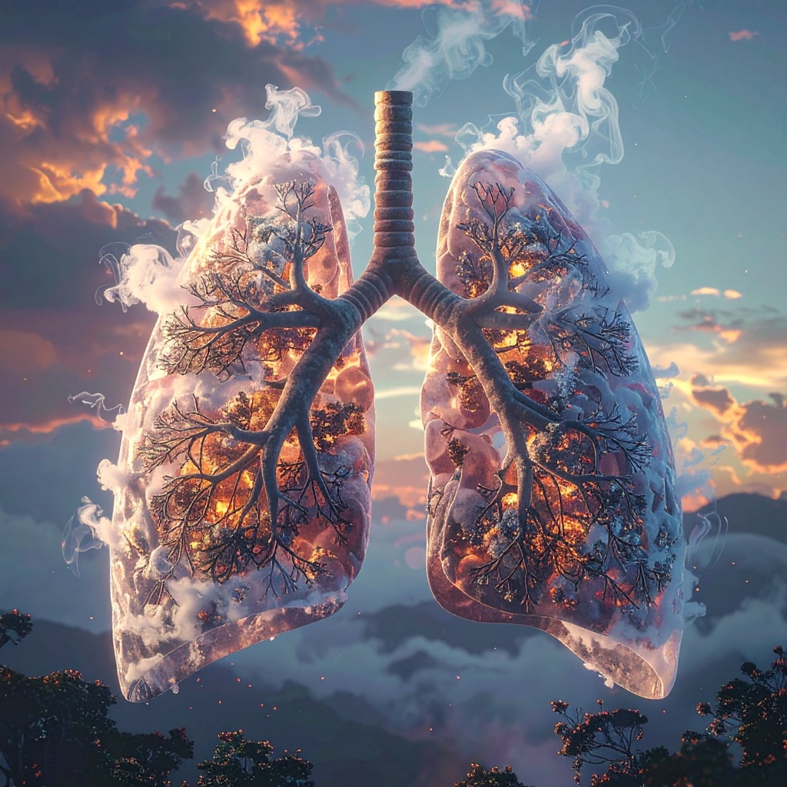
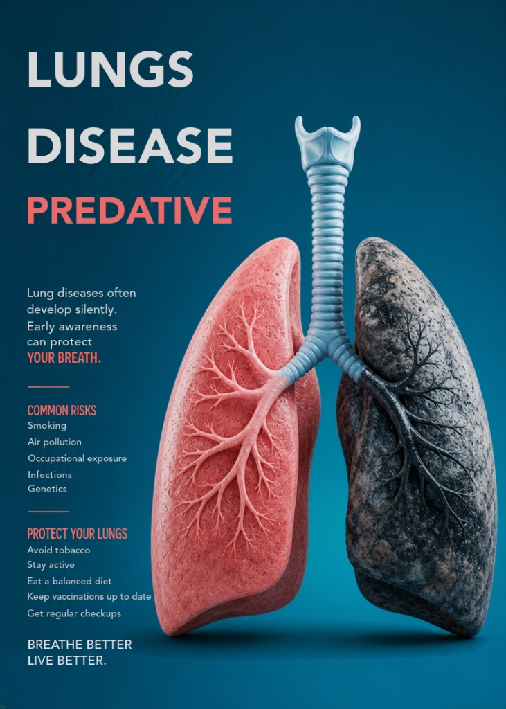
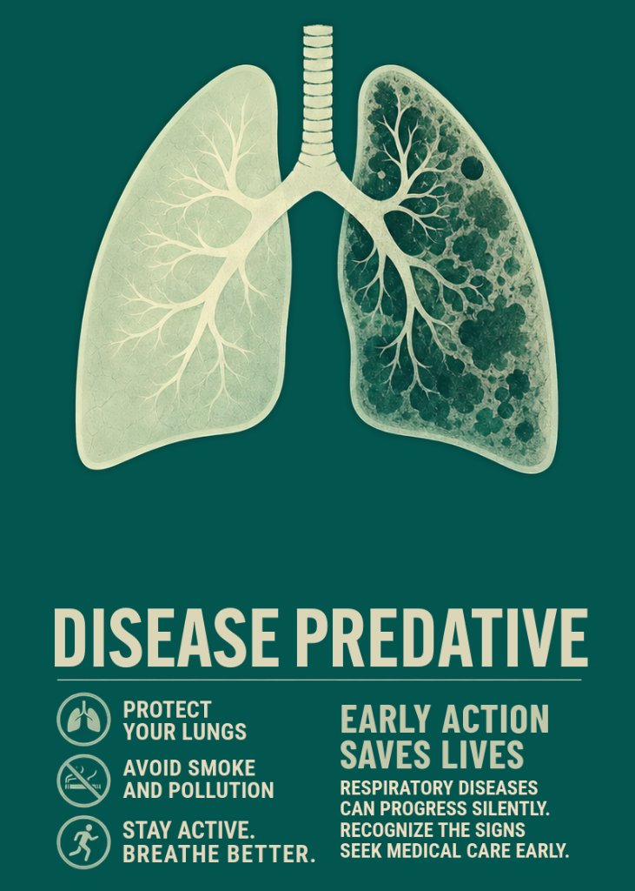
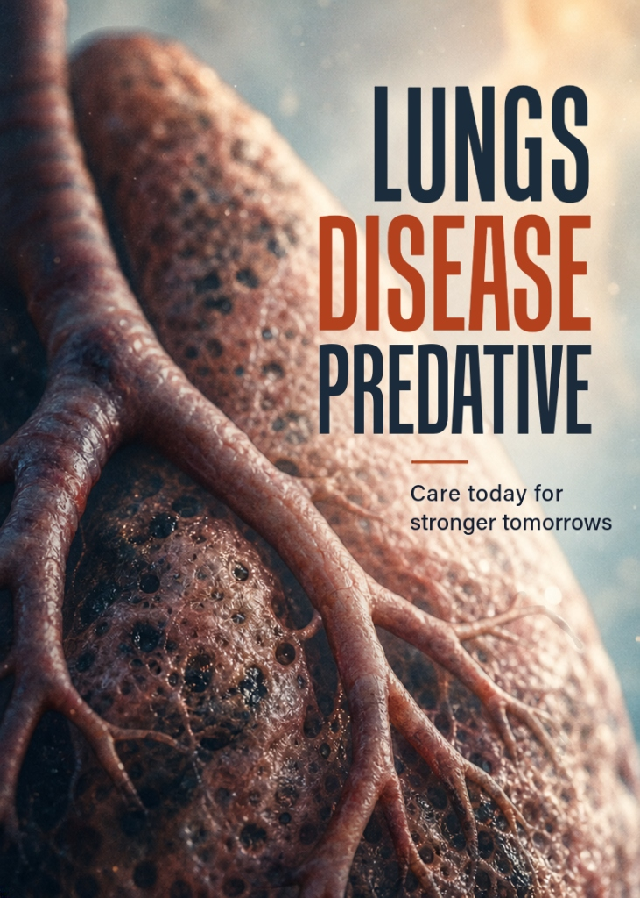
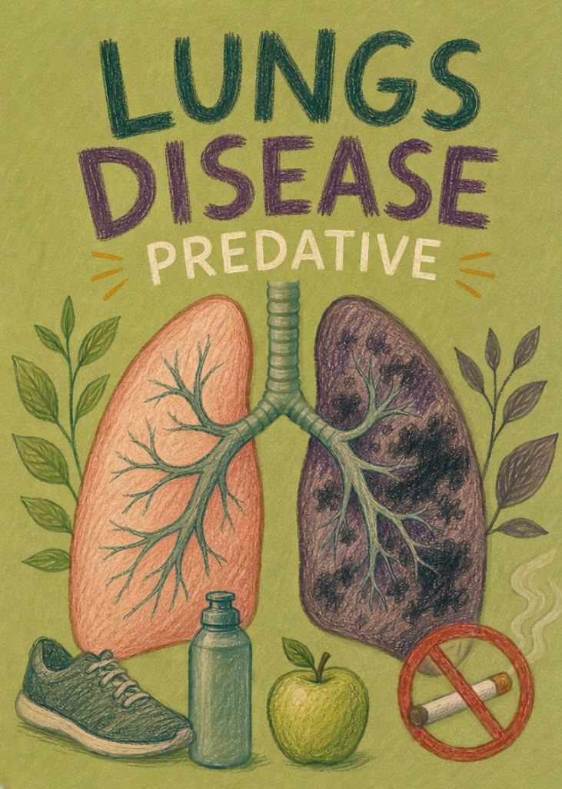

LungGuard AI classifies axial lung CT slices into three distinct clinical categories: Benign, Malignant, and Normal using a fine-tuned EfficientNetB0 convolutional neural network.
Computed Tomography (CT) provides high-resolution cross-sectional views of lung parenchyma. LungGuard AI evaluates tissue density patterns into three distinct clinical categories.
Clear lung parenchymal attenuation with uniform aeration, symmetric bronchovascular arborization, and healthy pleural margins without pathological mass effects.
Non-cancerous pulmonary nodules including hamartomas, granulomas, or inflammatory scars. Typically present well-circumscribed contours and lack infiltrative margins.
Invasive neoplastic pulmonary lesions such as adenocarcinoma, squamous cell carcinoma, or small cell carcinoma. Characterized by irregular, spiculated borders.
The respiratory system is an intricate branching network that channels air through descending conduits into millions of microscopic gas-exchange units.

Figure 1: Morphological anatomy of the tracheobronchial tree, lobes, and alveolar micro-architecture.
The human respiratory system features asymmetric lungs: the Right Lung with 3 lobes (Superior, Middle, Inferior) and the Left Lung with 2 lobes (Superior, Inferior) accommodating the cardiac notch. Double-layered pleura facilitates frictionless thoracic expansion.
The trachea bifurcates at the carina into the right and left main bronchi. C-shaped cartilaginous rings maintain airway patency, while pseudostratified ciliated columnar epithelium acts as an escalator removing inhaled particulate matter.
As airways branch past generation 10, cartilage disappears, transitioning into bronchioles encased in smooth muscle. Bronchoconstriction and bronchodilation in these conduits govern localized ventilation distribution.
Over 300 to 500 million microscopic alveoli provide approximately 70 m² of surface area for passive gas exchange. Type I pneumocytes form the thin blood-air barrier, while Type II cells secrete surfactant to prevent end-expiratory atelectasis.
Evaluate respiratory wellness, practice guided pulmonary endurance exercises, and track clinical spirometry measurements for proactive lung health.
Breathing is your body’s primary engine for oxygen delivery and cellular longevity. Early changes in airway resistance or lung compliance often manifest subtly during routine activities before significant clinical symptoms arise.
Track vital capacity and diaphragmatic expansion through guided cadence pacing.
Measure breath-hold intervals to gauge alveolar gas exchange tolerance over time.
Input FEV1, FVC, and PEF clinical spirometer values for instant GOLD criteria assessment.
Every assessment is permanently saved to your LungGuard Dashboard for clinical review.
Early detection of pulmonary lesions remains the primary determinant of long-term prognosis. Understanding environmental and behavioral carcinogens empowers clinical awareness.
Cigarette smoking is responsible for 80% to 90% of lung cancer cases worldwide. Polycyclic aromatic hydrocarbons and nitrosamines directly induce DNA mutations in bronchial epithelium.
The leading cause of lung cancer among non-smokers. Radon-222 is an odorless radioactive gas emanating from natural soil decay that accumulates in basements and enclosed buildings.
Industrial inhalation of asbestos fibers, crystalline silica, diesel exhaust, arsenic, and chromium damages alveolar architecture and creates chronic pulmonary fibrotic changes.
Chronic Obstructive Pulmonary Disease (COPD), idiopathic pulmonary fibrosis (IPF), and genetic familial susceptibility significantly amplify individual baseline risk.
Educational posters and scientific visual models highlighting early detection, lifestyle protection, tracheobronchial branching, and silent pathology progression. Click any poster to inspect full size.

Tracheobronchial branching and silent developmental risks.

Key guidelines for air quality, smoke avoidance, and fitness.
Conceptual rendering of the respiratory network and atmospheric balance.

Deep inspection of parenchymal architecture and tissue defense.

Daily habits to strengthen lung function and alveolar health.
Explore genuine axial CT images extracted directly from the Iraq Oncology Teaching Hospital / National Center for Cancer Diseases benchmark dataset used in model training.
From binary upload to multi-class probabilistic assessment, our deep learning pipeline mirrors the exact preprocessing parameters verified in the research notebook.
Axial lung CT scans are submitted via the interactive studio. The backend enforces file format headers (JPEG/PNG) and strict size constraints (up to 10 MB).
The image is converted to 3-channel RGB and resized to 224 × 224 pixels with Lanczos resampling. In accordance with the notebook, raw pixel values [0, 255] are retained.
The pre-trained CNN extracts multiscale spatial features across inverted residual blocks, followed by Global Average Pooling and a 30% dropout regularization layer.
A 3-node dense layer outputs calibrated softmax probabilities for Benign, Malignant, and Normal classes, returning the prediction and latency breakdown.